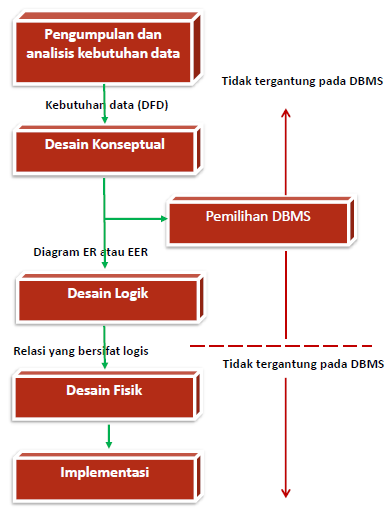

A. Pengertian Desain Database
Desain Basis Data adalah kumpulan proses yang memfasilitasi perancangan, pengembangan, implementasi, dan pemeliharaan sistem manajemen data perusahaan. Basis data yang dirancang dengan benar mudah dipelihara, meningkatkan konsistensi data, dan hemat biaya dalam hal ruang penyimpanan disk. Desainer database memutuskan bagaimana elemen data berkorelasi dan data apa yang harus disimpan.
B. Tujuan
Tujuan utama perancangan basis data adalah untuk menghasilkan model desain logis dan fisik dari sistem basis data yang diusulkan. Model logis berkonsentrasi pada persyaratan data dan data yang akan disimpan terlepas dari pertimbangan fisik. Itu tidak peduli dengan bagaimana data akan disimpan atau di mana akan disimpan secara fisik. Model desain data fisik melibatkan penerjemahan desain logis dari database ke media fisik menggunakan sumber daya perangkat keras dan sistem perangkat lunak seperti sistem manajemen basis data (DBMS).
C. Database Design Proccess
Secara khusus proses desain berisikan 2 aktifitas paralel. Aktifitas yang pertama melibatkan desain dari isi data dan struktur database, sedangkan aktifitas kedua mengenai desain pemrosesan database dan aplikasi-aplikasi perangkat lunak. Kedua aktifitas ini saling menjalin dan saling mempengaruhi satu sama lain.
6 tahap proses desain database:1. Pengumpulan dan Analisis Kebutuhan Data
2. Desain Database Konseptual
3. Pemilihan DBMS
4. Desain Database Secara Logika (Pemetaan Model Data)
5. Desain Database Secara Fisik
6. Implementasi Database
D. Pengumpulan data dan analisa
Merupakan suatu tahap dimana kita melakukan proses indentifikasi dan analisa kebutuhan-kebutuhan data dan ini disebut pengumpulan data dan analisa. Untuk menentukan kebutuhan-kebutuhan suatu sistem database, kita harus mengenal terlebih dahulu bagian-bagian lain dari sistem informasi yang akan berinteraksi dengan sistem database, termasuk para user yang ada dan para user yang baru beserta aplikasi-aplikasinya. Kebutuhan-kebutuhan dari para user dan aplikasi-aplikasi inilah yang kemudian dikumpulkan dan dianalisa.
E. Perancangan database secara konseptual
Pada tahap ini akan dihasilkan conceptual schema untuk database yang tergantung pada sebuah DBMS yang spesifik. Sering menggunakan sebuah high-level data model seperti ER/EER modelselama tahap ini. Dalam conceptual schema, kita harus merinci aplikasi-aplikasi database yang diketahui dan transaksi-transaksi yang mungkin.Tahap perancangan database secara konseptual mempunyai 2 aktifitas pararel:
Perancangan skema konseptualMenguji kebutuhan-kebutuhan data dari suatu database yang merupakan hasil dari tahap 1 dan menghasilkan sebuah conceptual database schema pada DBMS-independent model data tingkat tinggi seperti EER (Enhanced Entity Relationship) model. Untuk menghasilkan skema tersebut dapat dihasilkan dengan penggabungan bermacam-macam kebutuhan user dan secara langsung membuat skema database atau dengan merancang skema-skema yang terpisah dari kebutuhan tiap-tiap user dan kemudian menggabungkan skema-skema tersebut. Model data yang digunakan pada perancangan skema konseptual adalah DBMS-independent dan langkah selanjutnya adalah memilih DBMS untuk melakukan rancangan tersebut.
Perancangan transaksiMenguji aplikasi-aplikasi databasedimana kebutuhan-kebutuhannya telah dianalisa pada fase 1, dan menghasilkan perincian transaksi-transaksi ini.Kegunaan tahap ini yang diproses secara paralel bersama tahapp perancangan skema konseptual adalah untuk merancang karakteristik dari transaksi-transaksi database yang telah diketahui pada suatu DBMS-independent. Transaksi-transaksi ini akan digunakan untuk memproses dan memanipulasi database suatu saat dimana database tersebut dilaksanakan.
E. Pemilihan DBMS
Pemilihan database ditentukan oleh beberapa faktor diantaranya faktor teknik, ekonomi, dan politik organisasi.Contoh faktor teknik: Keberadaan DBMS dalam menjalankan tugasnya seperti jenis-jenis DBMS (relational, network, hierarchical, dan lain-lain), struktur penyimpanan, dan jalur akses yang mendukung DBMS, pemakai, dan lain-lain. Teori memberikan konsep dan prinsip yang menolong untuk memahami perilaku dari suatu persoalan yang berkorelasi dengan teori tersebut. Bidang ilmu komputer meliputi topik yang luas, dari perancangan mesin sampai pemrograman. Disamping perbedaan yang ada, terdapat keseragaman prinsip-prinsip umum yang dipakai. Untuk mempelajari prinsip-prinsip dasar tersebut, kita mengkonstruksi suatu mesin otomata sebagai model abstrak dari komputer dan komputasi. Model ini memiliki fungsi-fungsi yang penting dan umum pada perangkat keras dan perangkat lunak komputer. Meskipun model tersebut sederhana untuk diterapkan langsung pada dunia nyata, keuntungan yang diperoleh dari mempelajarinya adalah memberikan landasan untuk basis dari suatu pengembangan algoritma. Beberapa gagasan yang diutarakan memiliki penerapan yang penting, misalkan pada compiler
F. Perancangan database secara logika (data model mapping)
Tahap selanjutnya adalah membuat sebuah skema konseptual dan skema eksternal pada model data dari DBMS yang terpilih. Tahap ini dilakukan oleh pemetaan skema konseptual dan skema eksternal yang dihasilkan pada tahap 2. Pada tahap ini, skema konseptual ditransformasikan dari model data tingkat tinggi yang digunakan pada tahap 2 ke dalam model data dari model data dari DBMS yang dipilih pada tahap 3
Pemetaan tersebut dapat diproses dalam 2 tingkat:
1. Pemetaan system-independentPemetaan ke dalam model data DBMS dengan tidak mempertimbangkan karakteristik atau hal-hal yang khusus yang berlaku pada implementasi DBMS dari model data tersebut.
2. Penyesuain skema ke DBMS yang spesifik
Mengatur skema yang dihasilkan pada langkah 1 untuk disesuaikan pada implementasi yang khusus di masa yang akan datang dari suatu model data yang digunakan pada DBMS yang dipilih.Hasil dari tahap ini memakai perintah-perintah DDL (Data Definition Language) dalam bahasa DBMS yang dipilih yang menentukan tingkat skema konseptual dan eksternal dari sistem database.